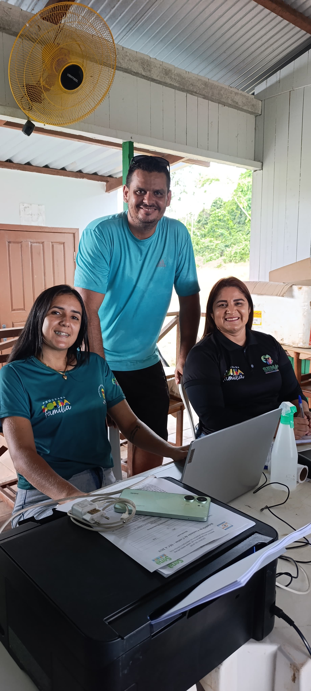
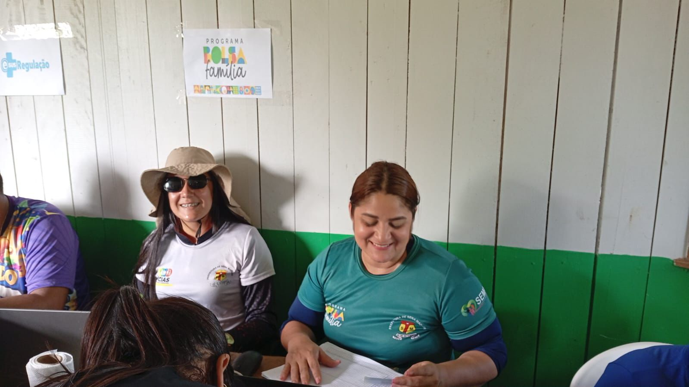
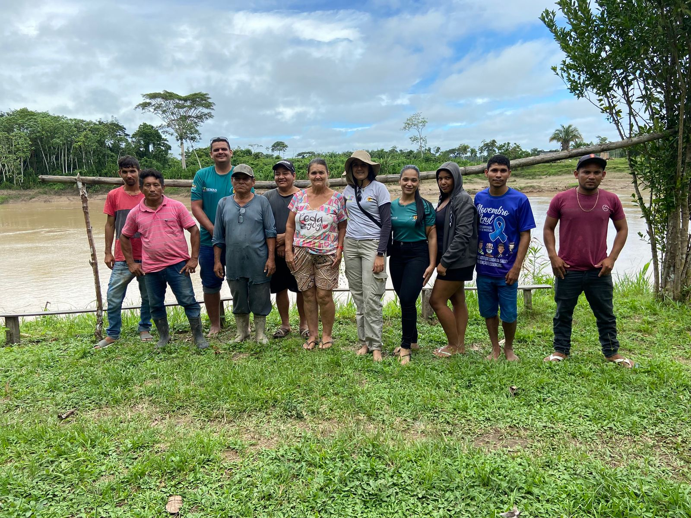

Sena Madureira - Tire suas dúvidas
Notícias💰 O que é exatamente?
O Bolsa Família é um benefício em dinheiro pago todo mês, criado para garantir o básico às famílias, como alimentação, saúde e educação.
👨👩👧👦 Quem tem direito?
Podem receber:
° Famílias com renda mensal baixa por pessoa
° Famílias inscritas no Cadastro Único
° Que mantenham os dados atualizados
📋 Quais são as regras?
Para continuar recebendo, a família precisa:
° Cumprir o calendário de vacinação
° Fazer o acompanhamento de saúde (principalmente gestantes e crianças)
° Manter crianças e adolescentes na escola
💵 Quanto recebe?
° O valor varia conforme a família, mas inclui:
° Valor mínimo garantido
° Benefícios extras dependendo da situação
🧭 Resumindo:
O Bolsa Família é um programa que combate a pobreza e ajuda famílias a terem uma vida mais digna, ao mesmo tempo incentivando educação e saúde.
O CRAS é a porta de entrada para os serviços sociais. Ele atende principalmente famílias em situação de vulnerabilidade.
Entre os principais serviços estão: Acompanhamento familiar, atendimento com assistente social e psicólogo, participação em programas e oficinas.
Quem pode procurar? Famílias de baixa renda, idosos, crianças e pessoas com deficiência.
Resumo: O CRAS é o lugar onde você vai quando precisa de ajuda do governo na área social.


